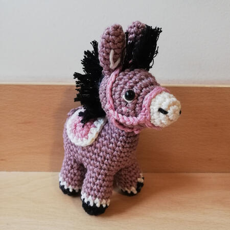
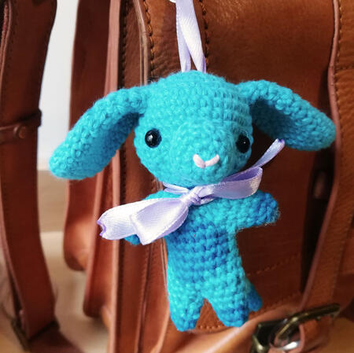
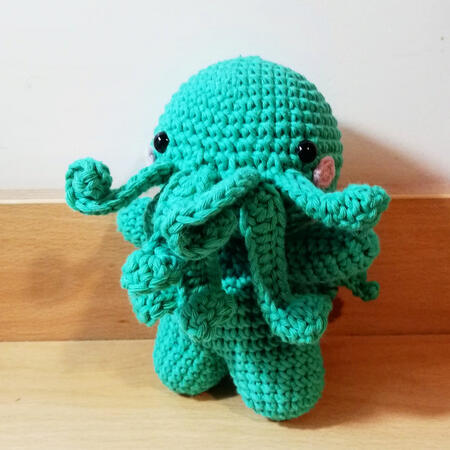
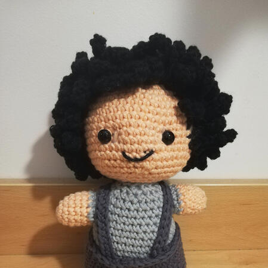
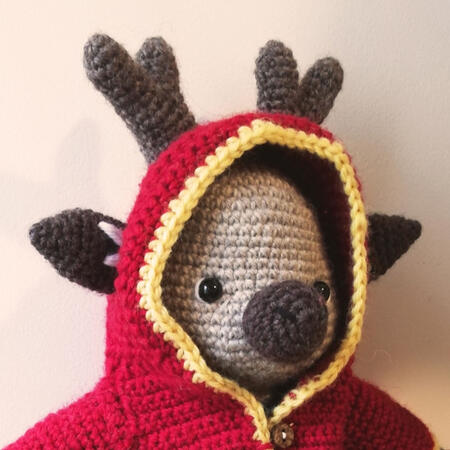
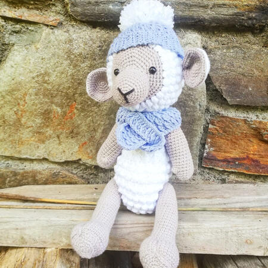
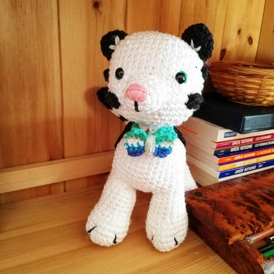
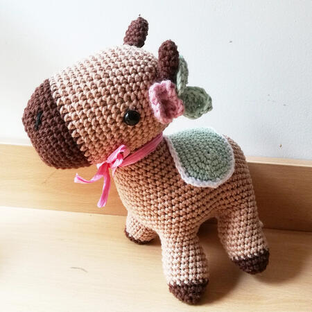
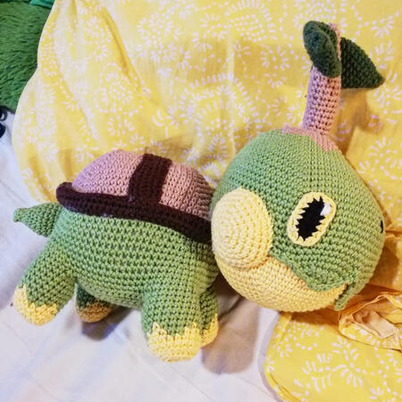
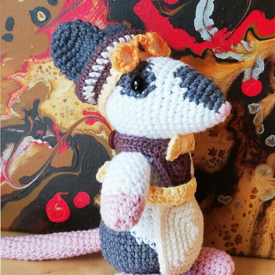

Prix
Je propose différentes tailles de peluches selon vos besoins. Il s'agit ici de prix de base qui peuvent être modifiés selon le design que vous désirez.
Pour avoir une estimation exacte du prix de votre peluche, envoyez-moi un message sur Instagram (@mam.iel).
J'ai la possibilité de créer des yeux d'une couleur différente que le noir standard. Ceux-ci sont faits main avec de la peinture acrylique utilisée sur un oeil classique. Ils permettent d'avoir plus de variations que les classiques yeux noirs!
Petites peluches
Prix de base : 20€ 
Les petites peluches mesurent environ 10cm. Elles possèdent un design simplifié et peuvent être créées avec une attache pour porte-clé.
Etant donné la petite taille, il n'est pas forcément possible de réaliser tous les designs (notamment si ceux-ci contiennent de nombreux détails ou des habits complexes).
N'hésitez pas à me contacter si vous voulez savoir si votre idée est faisable pour ce type de peluche.
Peluches moyennes
Prix de base : 35€ 
Les peluches moyennes varient entre 15 et 20cm. Elles sont bipèdes et peuvent être la créature de votre choix.
Elles peuvent posséder des habits plus complexes que pour les petites peluches, mais les petits détails et accessoires ne sont pas forcément réalisables.
Coûts additionnels
Vêtements : De 3€ à 5€ par vêtement ou accessoire qui n'est pas directement crocheté sur la peluche.
Pattes supplémentaires, cornes, grandes oreilles, etc. : Environ 5€.
Yeux peints : 5€.
Grandes peluches
Prix de base : 50€ 
Les grandes peluches font aux alentours de 35cm et possèdent des bras et des jambes articulés.
Elles possèdent les plus grandes possibilités de customisation grâce à leur taille.
La plupart des vêtements peuvent être retirés, permettant de changer de vêtements si besoin.
Coûts additionnels
Vêtements : De 5€ à 10€ par vêtement ou accessoire qui n'est pas directement crocheté sur la peluche.
Pattes supplémentaires, cornes, grandes oreilles, etc. : Environ 10€.
Yeux peints : 5€.
Peluches quadrupèdes
Prix de base : 35€ 
Si vous préférez avoir une peluche d'une créature à 4 pattes, c'est possible !
Ces peluches ne peuvent pas avoir de vêtements, mais elles peuvent porter différents accessoires (écharpe, tapis etc).
Elles mesurent en général 20cm de haut.
Coûts additionnels
Accessoires : 5€ par accessoire.
Pattes supplémentaires, cornes, grandes oreilles, etc. : Environ 10€.
Yeux peints : 5€.
Autres peluches
 
Si vous voulez une peluche d'un modèle qui n'est pas présent ici, n'hésitez pas à me contacter !
Je pourrais vous donner une estimation avec la forme de peluche que vous préférez.